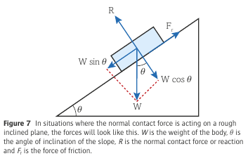

Created with Adobe Dreamweaver CS4 (2002), hosted on Github Pages. This website is best viewed on Internet Explorer 8 or equivalent, with a 64KB/S or greater modem, and Jetbrains Mono, because it's the best font ever!
Go Home... | Go To The Index... | Physics / Module 3 / Chapter 3.2
The field of dynamics is about the motion of bodies and the forces applied to make them. Kinematics is motion without forces. Dynamics + Kinematics = Mechanics. Kinematics is covered in Physics Topic 3.1.1 - Definitions In Kinematics and Physics Topic 3.1.3 - Constant Acceleration Equations, and combining it with these forces gives the acceleration of a body.
Tension is the force experienced by an object being pulled, hung, rotated or supported. Tension can cause objects to accelerate and change shape, with it breaking after a point. Any object of mass m will have a tension of \(mg\) in the wire holding it, equal and opposite. If an increase in tension would accelerate the object upwards, \(T - mg = ma\), where a is the objects acceleration.
The normal contact force (reaction force) is a force that acts perpendicular to the point of contact to a body and the surface of which it is in contact. An object of mass m, and weight \(mg\) will have a normal contact force of \(mg\) (in the opposite direction).
Upthrust is the upwards force that a liquid or gas exerts on a body floating in it due to the volume displaced. If upthrust U = weight \(mg\), the object remains stationary at the given point in the fluid. A body falling through a fluid experiences both drag AND upthrust, opposing the force due to weight.
The force of friction occurs between two surfaces in contact with each other, and is caused by inter-atomic and inter-molecular forces. Friction opposes at point of contact.
A free-body diagram is a labelled drawing used to show the external forces acting on a body, showing what they act on, the direction, the type and the size. The acceleration can be analysed by resolving all the forces. Good for slopes! Friction is parallel to the surface, normal is perpendicular, and weight is straight down.
